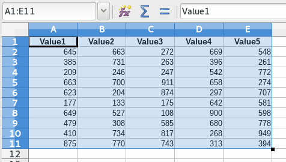

Herramientas¶
Mostrar información del PC¶
Sub ShowInfoPC()
util = createUnoService("org.universolibre.EasyDev")
'Sistema operativo
util.msgbox(util.OS)
'Nombre de la aplicación
util.msgbox(util.APP_NAME)
'Versión de la aplicación
util.msgbox(util.APP_VERSION)
'Lenguaje
util.msgbox(util.LANGUAGE)
'Tamaño de la pantalla
util.msgbox(util.getSizeScreen())
' https://docs.python.org/3.3/library/platform.html
' nombre de usuario,
' nombre del pc
' nombre del SO,
' tipo de maquina,
' nombre del procesador
' Cadena de indentificación de la plataforma con la mayor cantidad de información posible
util.msgbox(util.getInfoPC())
End Sub
Hacer una pregunta¶
Sub Pregunta()
util = createUnoService("org.universolibre.EasyDev")
titulo = "Mi programa"
mensage = "¿Es fácil Python?"
res = util.question(titulo, mensaje)
'Si pulsa SI, devuelve verdadero (True)
util.msgbox(res)
End Sub
Reemplazar cadenas¶
Reemplazar una cadena con argumentos
Sub RenderString()
util = createUnoService("org.universolibre.EasyDev")
'Puedes usar una estructura NamedValue
message = "Hola $data con $idioma, desde Basic 1!!"
Dim data1(1) As New com.sun.star.beans.NamedValue
data1(0).Name = "data"
data1(0).Value = "Mundo"
data1(1).Name = "idioma"
data1(1).Value = "Python"
message = util.render(message, data1)
util.msgbox(message)
'Usando estructura PropertyValue
message = "Hola $data con $idioma, desde Basic 2!!"
Dim data2(1) As New com.sun.star.beans.PropertyValue
data2(0).Name = "data"
data2(0).Value = "Mundo"
data2(1).Name = "idioma"
data2(1).Value = "Python"
message = util.render(message, data2)
util.msgbox(message)
'Usando matrices
message = "Hola $data con $idioma, desde Basic 3!!"
data = Array( _
Array("data", "Mundo"), _
Array("idioma", "Python") _
)
message = util.render(message, data2)
util.msgbox(message)
End Sub
Formato¶
Más información y ejemplos aquí.
Sub FormatData()
util = createUnoService("org.universolibre.EasyDev")
MsgBox util.format("Hello {}", "World")
MsgBox util.format("Hello {} from {}", Array("World", "PyUNO"))
MsgBox util.format("Hello {1} from {0}", Array("World", "PyUNO"))
MsgBox util.format("{:<20}|{:^20}|{:>20}", Array("Left", "Center", "Rigth"))
MsgBox util.format("{:_<20}|{:-^20}|{:_>20}", Array("Left", "Center", "Rigth"))
MsgBox util.format("{:d} {:f}", Array(100, 3.1416))
MsgBox util.format("{0:,.2f}", 123456789.2468)
MsgBox util.format("Number {n1} y {n2}", Array(Array("n1", "one"), Array("n2", "two")))
MsgBox util.format("Number {n2} y {n1}", Array(Array("n1", "one"), Array("n2", "two")))
my_date = createUnoStruct("com.sun.star.util.Date")
my_date.Day = 15
my_date.Month = 1
my_date.Year = 1974
MsgBox util.format("{:%d-%B-%Y}", my_date)
my_date = createUnoStruct("com.sun.star.util.DateTime")
my_date.Day = 15
my_date.Month = 1
my_date.Year = 1974
my_date.Hours = 13
my_date.Minutes = 30
MsgBox util.format("{:%Y-%b-%d %H:%M}", my_date)
End Sub
Archivos y directorios¶
Obtener una ruta desde configuración. Más información: XPathSettings.
path = util.getPath("Temp")
util.msgbox(path)
path = util.getPath("Work")
util.msgbox(path)
- Obtener información de una ruta:
- ruta base,
- nombre del archivo,
- nombre del archivo sin extensión,
- extensión del archivo.
data = util.getPathInfo("/home/USER/log.txt")
util.msgbox(data)
Unir rutas
path = util.pathJoin(Array("/home", "USER", "Documents"))
util.msgbox(path)
path = util.pathJoin(Array("/home/USER/Documents", "..", "Picture"))
util.msgbox(path)
Seleccionar directorio, de forma predeterminada, muestra la ruta de documentos del usuario
folder = util.getFolder("")
util.msgbox(folder)
'Se puede establecer otra ruta de inicio
folder = util.getFolder("/home/USER")
util.msgbox(folder)
Seleccionar un solo archivo sin filtros.
file = util.getSelectedFiles("", False, Array())
util.msgbox(file)
Seleccionar multiples archivos sin filtros.
files = util.getSelectedFiles("", True, Array())
util.msgbox(files)
Seleccionar multiples archivos con un filtro.
filters = Array( _
Array("TXT", "*.txt"), _
Array("LOG", "*.log"), _
Array("CER | KEY", "*.cer;*.key") _
)
files = util.getSelectedFiles("", True, filters)
util.msgbox(files)
Obtener todos los archivos de un directorio de forma recursiva.
files = util.getFiles("/home/USER/Pictures", "")
util.msgbox(files)
Obtener todos los archivos de un directorio de forma recursiva con un filtro.
files = util.getFiles("/home/USER/Pictures", "jpg")
util.msgbox(files)
files = util.getFiles("/home/USER/Pictures", "png")
util.msgbox(files)
Abrir un archivo y leer su contenido.
data = util.fileOpen("/home/USER/log.txt", "r", False)
util.msgbox(data)
Abrir un archivo regresando cada línea en una matriz.
data = util.fileOpen("/home/USER/log.txt", "r", True)
util.msgbox(data)
Guardar información en un nuevo archivo.
data = "Hello World Python"
util.fileSave("/home/USER/test.txt", "w", data)
'Verify
data = util.fileOpen("/home/mau/test.txt", "r")
util.msgbox(data)
Agregar información a un archivo
data = "Hello World Python" & CHR(10)
util.fileSave("/home/USER/test2.txt", "a", data)
'Verify
data = util.fileOpen("/home/USER/test2.txt", "r")
util.msgbox(data)
Ejecutar¶
Ejecutar un comando y esperar la respuesta.
res = util.execute(Array("ls","-la"), True)
util.msgbox(res)
Ejecutar un comando y no esperar respuesta.
util.execute(Array("gnome-calculator"), False)
Configuración¶
Guadar un valor en el registro de configuración de LibreOffice, el valor se guarda de forma persistente.
util.setConfig("DefaultMail", "test@correolibre.net")
'Get value from config
value = util.getConfig("DefaultMail")
util.msgbox(value)
Es posible guardar matrices.
util.setConfig("Matriz", Array(1,2,3))
value = util.getConfig("Matriz")
util.msgbox(value)
Portapapeles¶
Obtener texto del portapapeles.
value = util.getClipboard()
util.msgbox(value)
Enviar texto al portapapeles.
util.setClipboard("Hello World PyUNO!!")
'Verify
value = util.getClipboard()
util.msgbox(value)
Tiempo Unix¶
Más información: https://en.wikipedia.org/wiki/Unix_time
epoch = util.getEpoch()
util.msgbox(epoch)
Llamar macros¶
Más información: Scripting Framework
Guarda la siguiente macro en:
/home/USER/.config/libreoffice/4/user/Scripts/python/mymacros.py
import uno
import time
def show_time(cell):
cell.setString(time.strftime('%c'))
time.sleep(3)
return
Llamar a una macro Python (predeterminado) y esperar la respuesta.
macro = createUnoStruct("org.universolibre.EasyDev.Macro")
macro.Library = "mymacros"
macro.Name = "show_time"
cell = ThisComponent.CurrentSelection
util.callMacro(macro, Array(cell))

Llamar a una macro Python y no esperar la respuesta.
macro = createUnoStruct("org.universolibre.EasyDev.Macro")
macro.Library = "mymacros"
macro.Name = "show_time"
macro.Thread = True
cell = ThisComponent.CurrentSelection
util.callMacro(macro, Array(cell))
Llamar a una macro en Basic
macro = createUnoStruct("org.universolibre.EasyDev.Macro")
macro.Library = "EasyDevLib"
macro.Module = "Examples"
macro.Name = "HelloWorld"
macro.Language = "Basic"
macro.Thread = False
util.callMacro(macro, Array())
{kind=link}
Timer¶
Guarda la siguiente macro en:
/home/USER/.config/libreoffice/4/user/Scripts/python/mymacros.py
import uno
import time
def show_time(cell):
cell.setString(time.strftime('%c'))
return
timer(NOMBRE_TIMER, SEGUNDOS, MACRO, ARGUMENTOS)
El nombre del timer es muy importante para que lo puedas detener. El timer siempre se ejecuta en otro hilo de proceso.
util = createUnoService("org.universolibre.EasyDev")
'Make data macro
macro = createUnoStruct("org.universolibre.EasyDev.Macro")
macro.Library = "mymacros"
macro.Name = "show_time"
'Arguments
cell = ThisComponent.CurrentSelection
'Timer name "time" and wait one second
util.timer("time", 1, macro, Array(cell))
Detener un timer por su nombre
Sub StopTimer()
util = createUnoService("org.universolibre.EasyDev")
util.stopTimer("time")
End Sub
Exportar a CSV¶
Establece un rango con datos y seleccionalo.
{kind=link}
y esportarlo.
util = createUnoService("org.universolibre.EasyDev")
range = ThisComponent.CurrentSelection
path = "/home/USER/test.csv"
data = range.getDataArray()
options = Array()
util.exportCSV(path, data, options)
Cambiar opciones de exportación, más información en: https://docs.python.org/3.3/library/csv.html#csv.writer
Dim options(0) As New com.sun.star.beans.NamedValue
util = createUnoService("org.universolibre.EasyDev")
range = ThisComponent.CurrentSelection
path = "/home/USER/test.csv"
data = range.getDataArray()
options(0).Name = "delimiter"
options(0).Value = "|"
util.exportCSV(path, data, options)